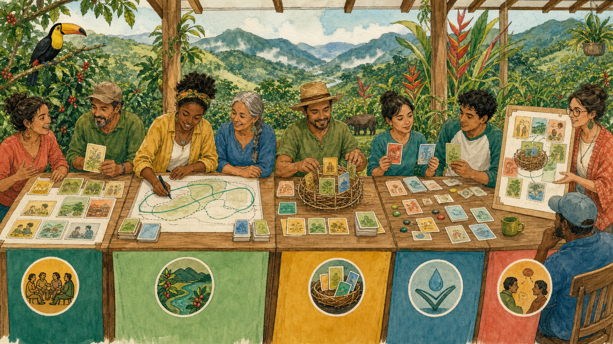

Edición ecosistema 1.0.0
COBRIA
Cuaderno de trabajo y laboratorios
Billy Jak Cordero Porras
Coto Brus, Costa Rica · 2026
Propuesta independiente · 1.0.0
Cuaderno de trabajo
Aprender haciendo
Ocho estaciones, treinta laboratorios y una rúbrica para documentar decisiones reales sin confundir práctica con certificación.
Use copias o notas separadas. Este cuaderno acompaña al libro principal y no sustituye la especificación normativa.
Taller práctico
Construya una arquitectura COBRIA
Ocho estaciones convierten un problema real en un diseño verificable. Trabaje con una muestra pequeña y conserve cada decisión.
Estación 1 de 8
Inventario de decisiones y consumidores
Producto de la estación
Mapa de escrituras, lecturas, responsables y consecuencias.
Trabajo
- Describa el estado inicial con un ejemplo concreto.
- Escriba el contrato antes de implementar.
- Diseñe un caso feliz y dos negativos.
- Defina la evidencia que conservará.
- Revise con una persona que no participó en el diseño.
Criterio de avance. No continúe si la autoridad, el ámbito o la evidencia siguen implícitos.
Estación 2 de 8
Diseño de documentos e identidad
Producto de la estación
Tres documentos con identidad, revisión, tiempos y procedencia.
Trabajo
- Describa el estado inicial con un ejemplo concreto.
- Escriba el contrato antes de implementar.
- Diseñe un caso feliz y dos negativos.
- Defina la evidencia que conservará.
- Revise con una persona que no participó en el diseño.
Criterio de avance. No continúe si la autoridad, el ámbito o la evidencia siguen implícitos.
Estación 3 de 8
Contratos, ámbito y validación
Producto de la estación
Contrato de éxito, rechazo y acceso prohibido.
Trabajo
- Describa el estado inicial con un ejemplo concreto.
- Escriba el contrato antes de implementar.
- Diseñe un caso feliz y dos negativos.
- Defina la evidencia que conservará.
- Revise con una persona que no participó en el diseño.
Criterio de avance. No continúe si la autoridad, el ámbito o la evidencia siguen implícitos.
Estación 4 de 8
Catálogos y evolución semántica
Producto de la estación
Una entrada versionada con vigencia, sustitución y cuarentena.
Trabajo
- Describa el estado inicial con un ejemplo concreto.
- Escriba el contrato antes de implementar.
- Diseñe un caso feliz y dos negativos.
- Defina la evidencia que conservará.
- Revise con una persona que no participó en el diseño.
Criterio de avance. No continúe si la autoridad, el ámbito o la evidencia siguen implícitos.
Estación 5 de 8
Proyecciones e índices
Producto de la estación
Ficha de consulta con filtros, orden, salida, frescura y presupuesto.
Trabajo
- Describa el estado inicial con un ejemplo concreto.
- Escriba el contrato antes de implementar.
- Diseñe un caso feliz y dos negativos.
- Defina la evidencia que conservará.
- Revise con una persona que no participó en el diseño.
Criterio de avance. No continúe si la autoridad, el ámbito o la evidencia siguen implícitos.
Estación 6 de 8
Reconstrucción, eventos y reparación
Producto de la estación
Manifiesto y prueba de equivalencia incremental frente a total.
Trabajo
- Describa el estado inicial con un ejemplo concreto.
- Escriba el contrato antes de implementar.
- Diseñe un caso feliz y dos negativos.
- Defina la evidencia que conservará.
- Revise con una persona que no participó en el diseño.
Criterio de avance. No continúe si la autoridad, el ámbito o la evidencia siguen implícitos.
Estación 7 de 8
Minería de datos e inteligencia artificial
Producto de la estación
Partición sin fuga, definición versionada y política de abstención.
Trabajo
- Describa el estado inicial con un ejemplo concreto.
- Escriba el contrato antes de implementar.
- Diseñe un caso feliz y dos negativos.
- Defina la evidencia que conservará.
- Revise con una persona que no participó en el diseño.
Criterio de avance. No continúe si la autoridad, el ámbito o la evidencia siguen implícitos.
Estación 8 de 8
Evaluación, costos y retiro
Producto de la estación
Tabla comparativa, umbrales, rúbrica y procedimiento de retiro.
Trabajo
- Describa el estado inicial con un ejemplo concreto.
- Escriba el contrato antes de implementar.
- Diseñe un caso feliz y dos negativos.
- Defina la evidencia que conservará.
- Revise con una persona que no participó en el diseño.
Criterio de avance. No continúe si la autoridad, el ámbito o la evidencia siguen implícitos.
Rúbrica final
Evaluación de una arquitectura COBRIA
Califique de cero a dos: ausente, parcial o comprobado.
Autoridad única0 · 1 · 2
Ámbito obligatorio0 · 1 · 2
Identidad estable0 · 1 · 2
Revisión monotónica0 · 1 · 2
Contrato versionado0 · 1 · 2
Procedencia0 · 1 · 2
Reconstrucción0 · 1 · 2
Frescura observable0 · 1 · 2
Caso negativo0 · 1 · 2
Retiro seguro0 · 1 · 2
Un cero en autoridad o aislamiento no se compensa con promedios altos.
Índice de decisiones
¿Por dónde comienzo?
| Necesidad | Primer patrón |
|---|
| No sé cuál copia contiene la verdad | Objeto canónico |
| Se cruzan organizaciones o permisos | Repositorio con ámbito |
| Los códigos cambian de significado | Catálogo versionado |
| Una consulta exige otra forma | Índice antes que proyección |
| No puedo rehacer una copia | Reconstrucción total |
| Las cifras no se reproducen | Conjunto de datos reproducible |
| La IA responde sin sustento | Abstención con evidencia |